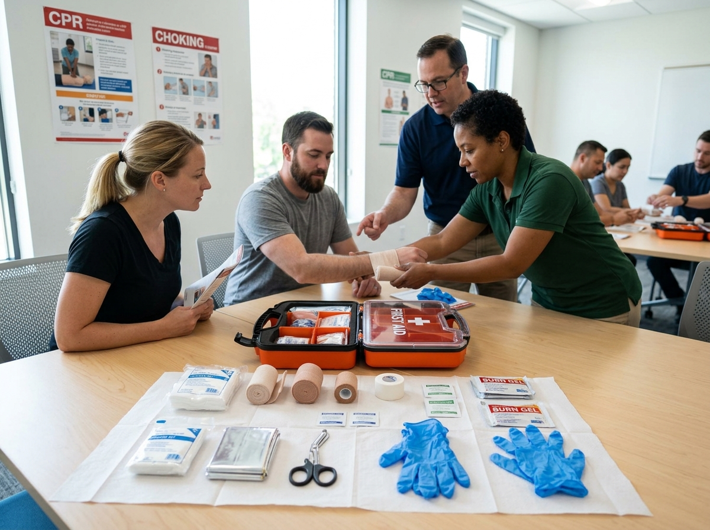
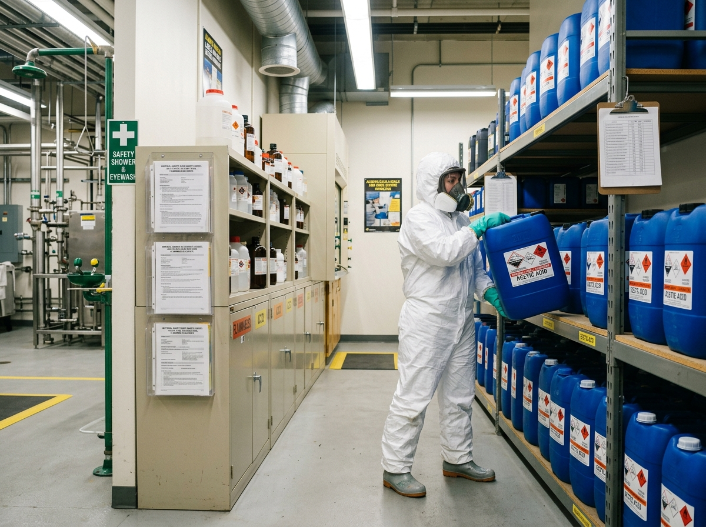

Memahami konsep, tujuan, dan ruang lingkup K3. Pelajari regulasi dasar, hak dan kewajiban pekerja, serta prinsip-prinsip keselamatan kerja.

Pelajari jenis-jenis APD lengkap — helm, kacamata, sarung tangan, rompi, masker — cara pemakaian yang benar dan pemeliharaannya.

Teknik HIRA (Hazard Identification Risk Assessment), JSA, dan cara membuat tabel penilaian risiko di lingkungan kerja Anda.

Klasifikasi api, cara menggunakan APAR dengan metode PASS, jalur evakuasi, dan koordinasi tim pemadam kebakaran.

Prosedur P3K: penilaian korban, penanganan luka, perdarahan, patah tulang, sengatan listrik, dan kedaruratan medis lainnya.

Prosedur LOTO (Lockout/Tagout), penjagaan mesin, pemeriksaan sebelum operasi, dan penanganan kecelakaan mesin.

Membaca label GHS, menggunakan MSDS/SDS, prosedur penyimpanan B3, penanganan tumpahan, dan keselamatan laboratorium.

Menyusun rencana tanggap darurat, melatih tim evakuasi, simulasi bencana, dan koordinasi dengan instansi terkait.